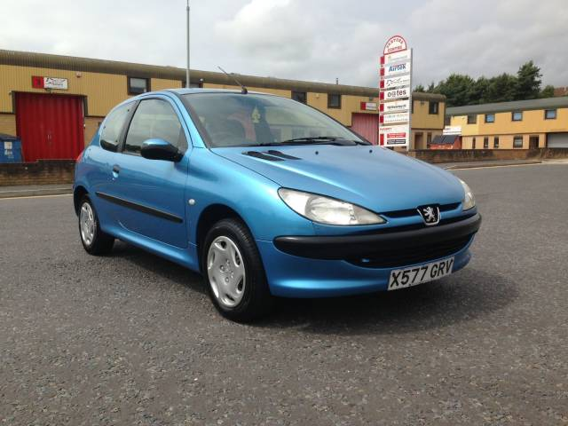

Home Mercedes Benz BMW Peugeot

Now onto Peugeots best ever selling car. The Peugeot 206 has enjoyed seven years on top and amassed 8.3 million global sales in the supermini class. Smart looks and large engine choice as well as bodystyles mean that it can still just about be considered fashionable in 2020.
It has a good diesel engine and is very practical and a safe drive, which I would recommend to learners. However, buying one isn't without pitfalls as would be expected as it is by far the cheapest car on the website. It is the saver's choice and cannot be seen as a serious comparison to the other featured cars. 0-60 in 14.7 and a top speed of 98mph clearly demonstrate that.It is a good car for a learner or a student who communtes and can't exactly splash the cash. Some major factors to consider before buying if you've only been looking at the other cars for fun.
The indicator stalks are prone to breaking on post-July 2001 cars. Stronger parts were used from January 2003, so later 206s should be all clear.
The engine. Mounts often fail on 1.4-litre petrol variants, while all models in the range are prone to lower balljoint wear in the front suspension which would mean you'd fail an MOT. Electronic management systems can cause trouble with automatic gearboxes.
Most 206s are three door, so five-door models means a small premium. You'd pay an extra £150-£200, although the more expensive and sporty GTi is exclusively available in three-door. Lower-spec cars get a sunroof instead of air-con - but check these for faults as they're impossible to fix.
It can be purchased new for a mere fraction of the other cars, as you can be expected to get it for just less than £1,000.
References
Mercedes Benz
https://www.timesfreepress.com/news/business/aroundregion/story/2019/jun/28/let-mercedes-benz-c43-amg-coupe-thrill-you-he/497748/
https://www.greencarguide.co.uk/green-car-guides/mercedes-benz-a-class-a180-cdi-eco-se/
BMW
https://blog.fcpeuro.com/the-5-cheapest-reliable-high-performance-bmws-right-now
https://www.carmagazine.co.uk/car-news/first-official-pictures/bmw/bmw-m3-saloon-2014-first-official-pictures/
Peugeot
https://www.autoexpress.co.uk/peugeot/308/352485/peugeot-308-updated-new-tech-and-trim-levels#:~:text=Peugeot%20has%20given%20the%20308,and%20some%20new%20customisation%20options&text=Peugeot%20has%20ditched%20the%20Tech,308%20Active%2C%20Allure%20and%20GT.
https://www.autoexpress.co.uk/peugeot/206/36878/peugeot-206